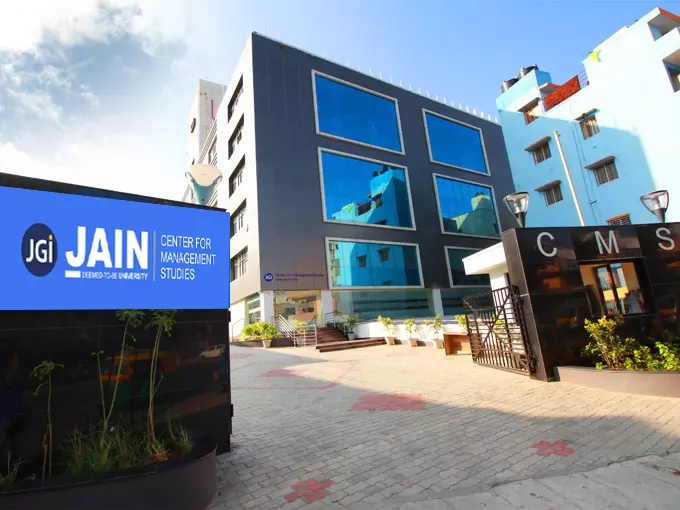

Our Global campus
Jain University, officially JAIN, is a private deemed-to-be-university in Bangalore, India.
Originating from Sri Bhagawan Mahaveer Jain College, it was conferred the deemed-to-be-university status in 2009

JPNAGAR

KANAKAPURA
